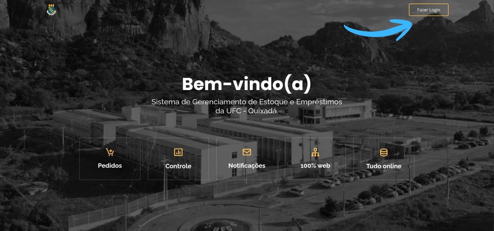
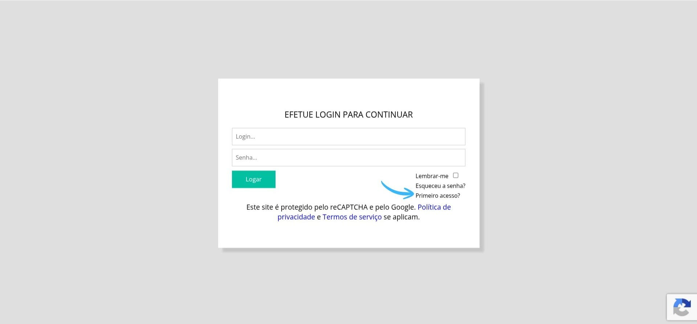
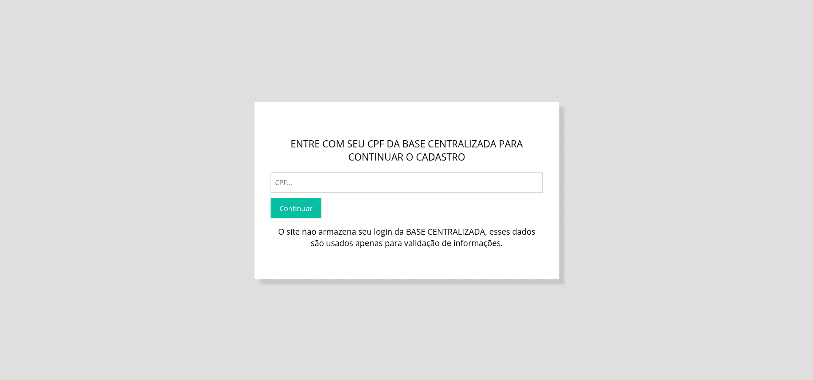
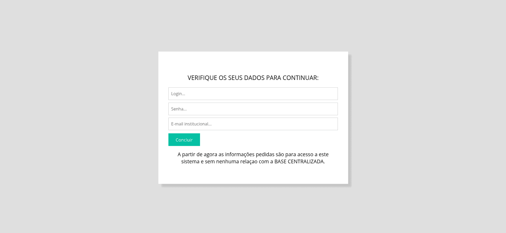
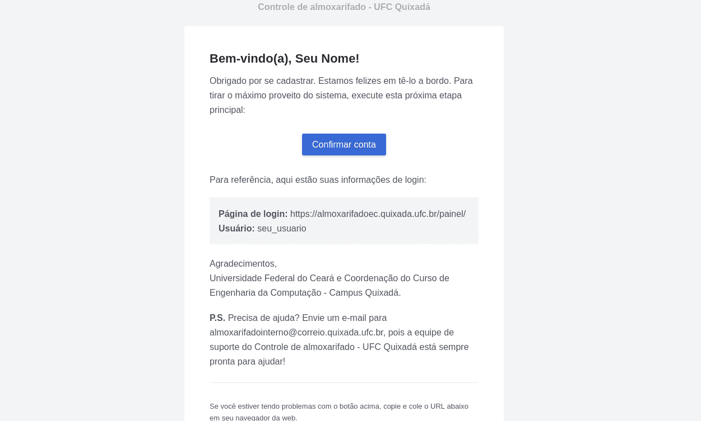

Como fazer o cadastro
Siga o passo a passo abaixo para acessar o sistema pela primeira vez e continuar o cadastro utilizando seus dados da base centralizada.
Passo 1
Na tela inicial do sistema, clique no botão Fazer Login, localizado no canto superior direito da página.

Passo 2
Na tela de login, clique na opção Primeiro acesso? para iniciar o processo de cadastro.

Passo 3
Informe seu CPF no campo indicado e clique em Continuar. O sistema utilizará essa informação apenas para validar seus dados e permitir a continuação do cadastro.

Passo 4
Verifique os dados solicitados para continuar o cadastro. Informe seu login, crie uma senha, preencha seu e-mail institucional e clique em Concluir.

Passo 5
Após concluir o cadastro, acesse seu e-mail institucional e abra a mensagem de confirmação enviada pelo sistema. Em seguida, clique em Confirmar conta para ativar seu cadastro.

Ainda possui dúvidas? Procure ajuda presencialmente na sala do almoxarifado.